Community Service Projects
🌟 Project Surrender – "Small Acts, Big Love"
📖 Overview
During the height of the COVID-19 pandemic, I participated in a meaningful community aid project called "Project Surrender". This initiative was a grassroots effort by e-hailing drivers to support families in crisis who raised white flags as a sign of help.
Within just three days, 56 fellow drivers and I responded to the call to action. Together with sponsors and community members, we successfully delivered over 200 food packages to families in need.
🙌 My Role
- Assisted in organizing and distributing food items
- Delivered aid to various neighborhoods while following SOPs
- Promoted the project on social media to gather public support
- Witnessed and listened to the stories of people who were struggling, which deepened my empathy and motivation to continue contributing
🧾 Outcome
- Strengthened community bonds during a national crisis
- Helped vulnerable groups like the elderly and jobless
- Recognized in the local newspaper (Sin Chew Daily) for our collective efforts
💬 Reflection
This experience reminded me that even small actions can have a big impact. Helping others in times of hardship brings out the best in humanity. I am proud to have contributed to this initiative and hope to continue supporting community causes.
📹 Project Video
📸 Project Gallery
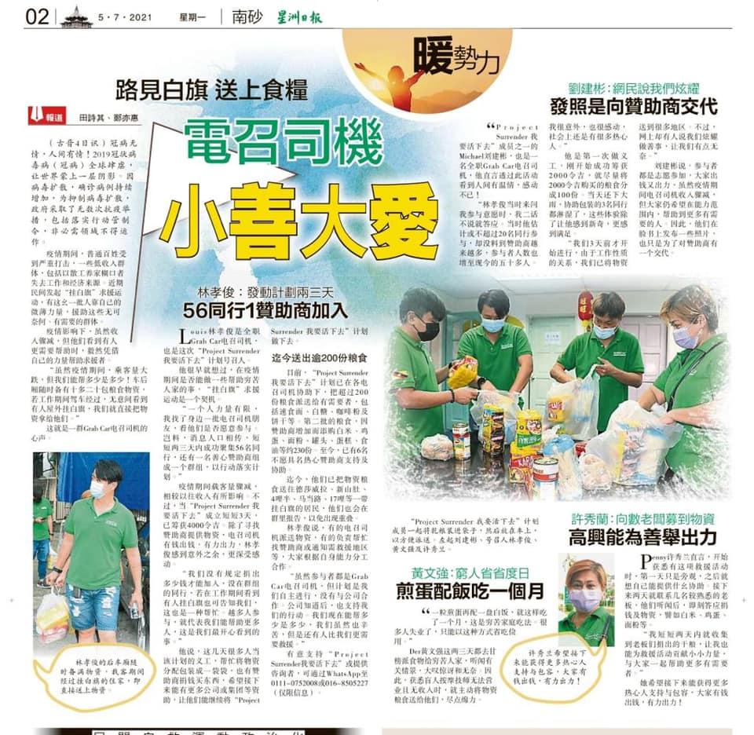
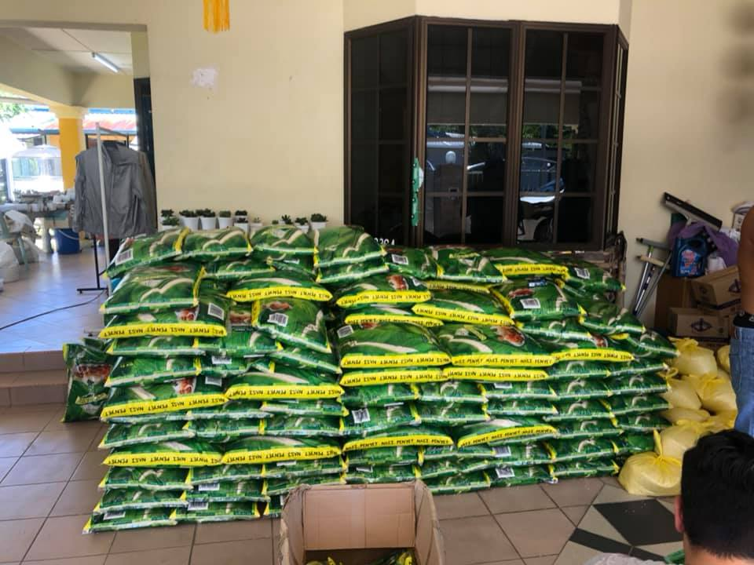
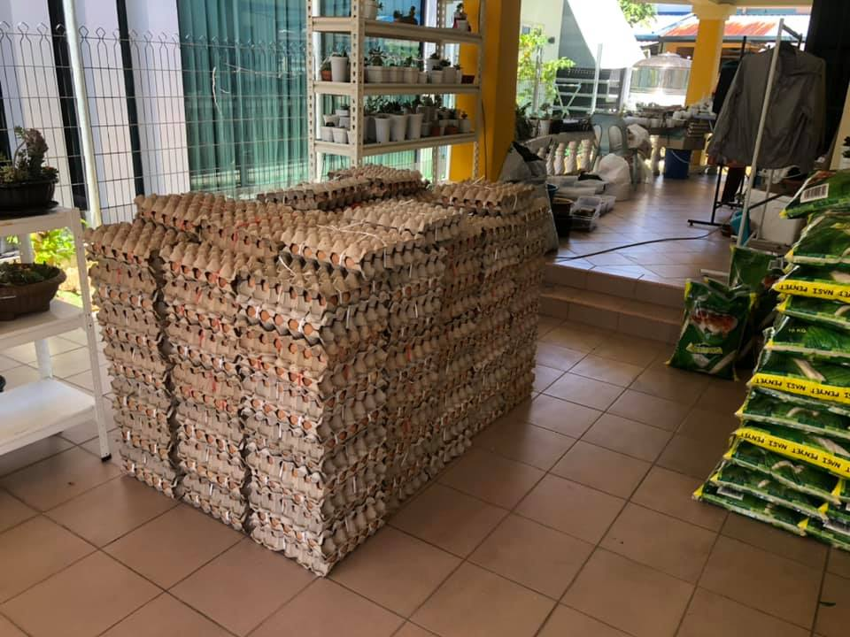
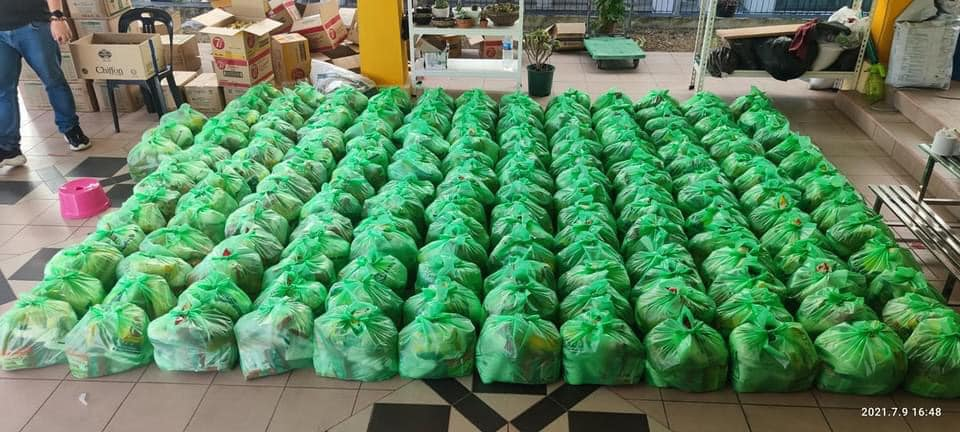
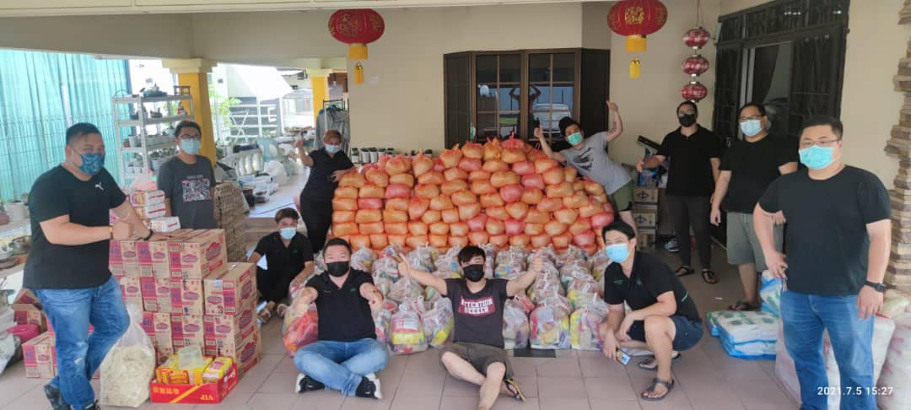
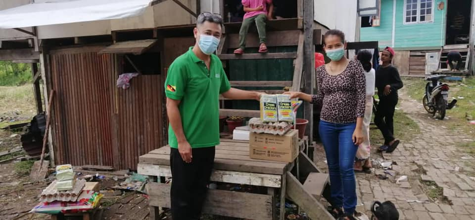
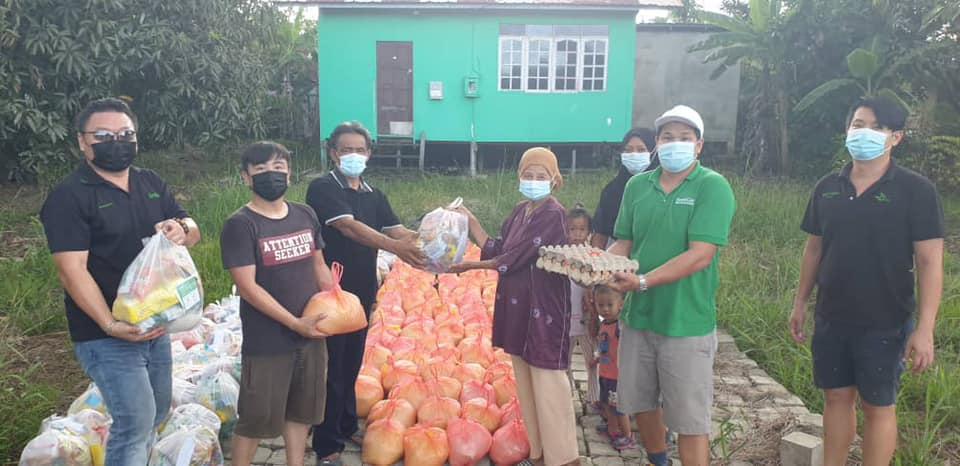
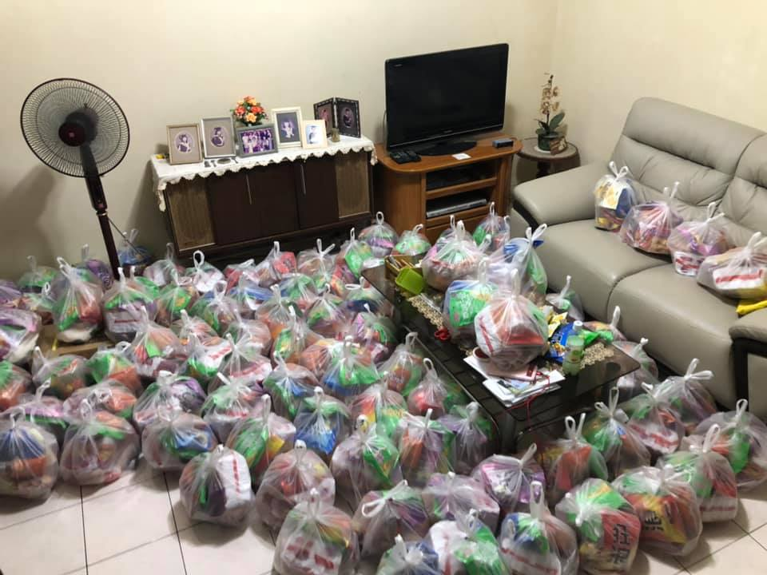
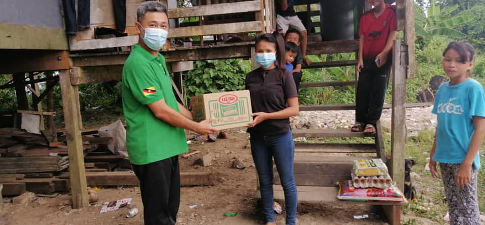
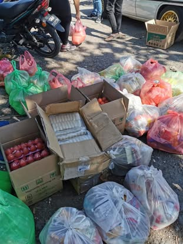
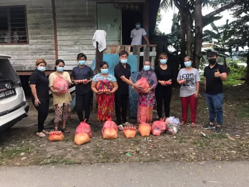
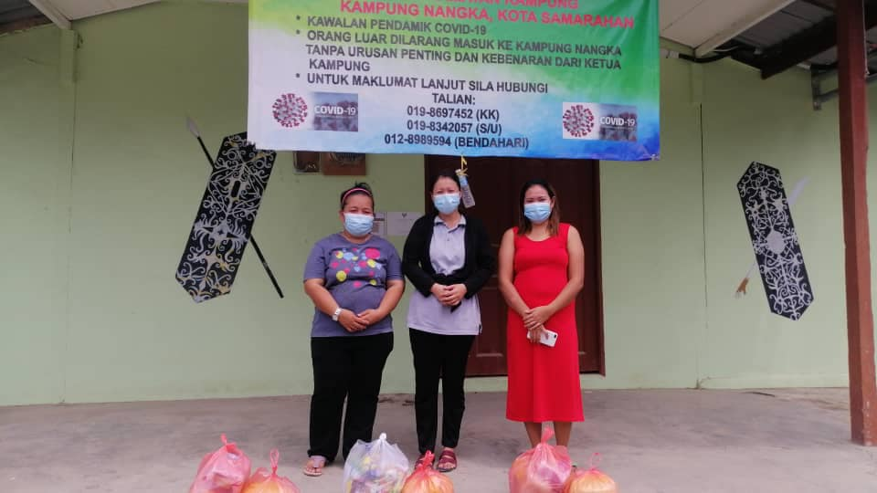